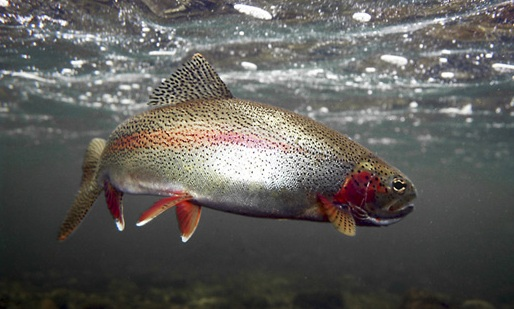

 Warren et al. (2004) examined the population of Rainbow Trout (Oncorhynchus mykiss) in the Upper Niagara Springs Pond in 2000. Fish were captured at two times by using an electrofishing unit attached to a driftboat. The capture history of all fish examined in the two samples that were 100 mm and longer is in RBTroutUNSP in the FSAdata package. Analyze these capture histories to answer the following questions.
from Derek H. Ogle , created 27-Sep-15, updated 02-Oct-15, Comments/Suggestions.